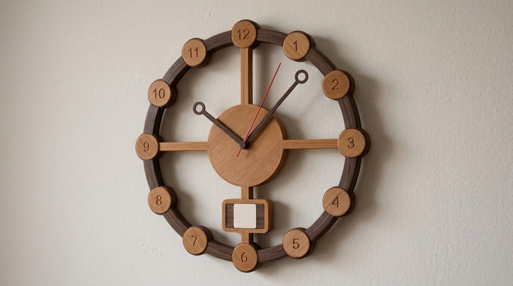
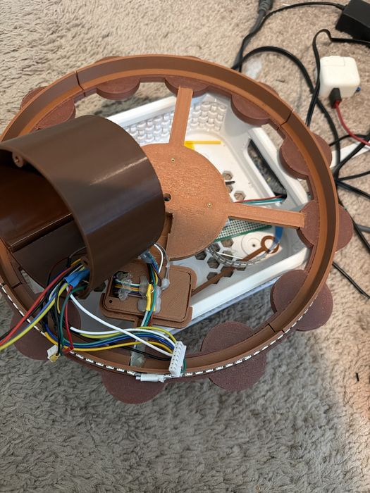
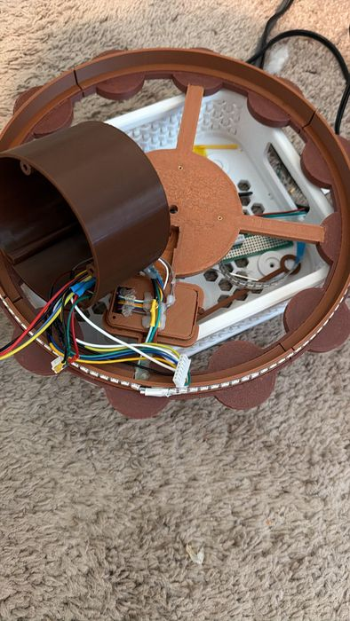
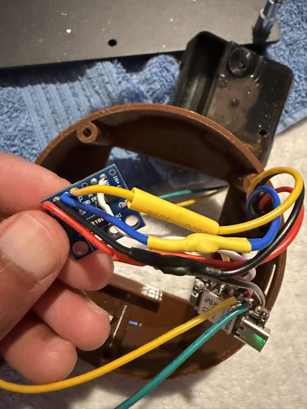
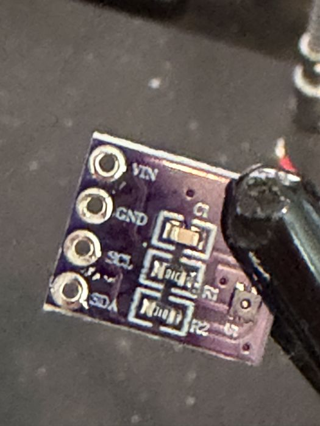
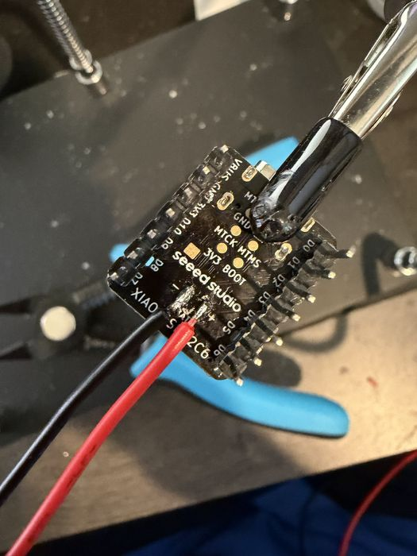
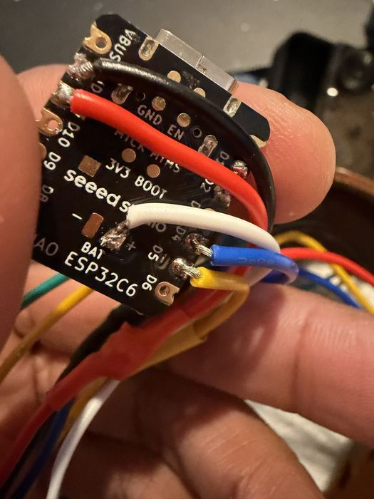
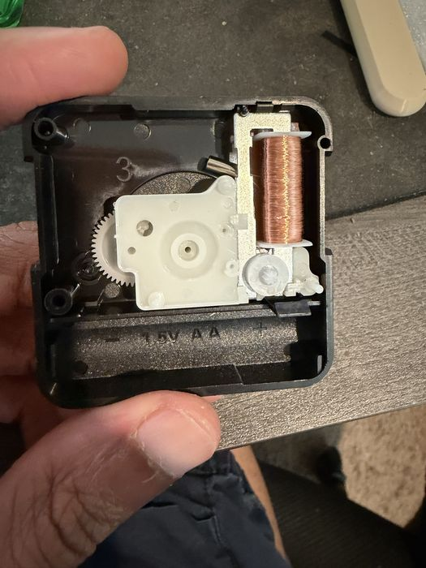
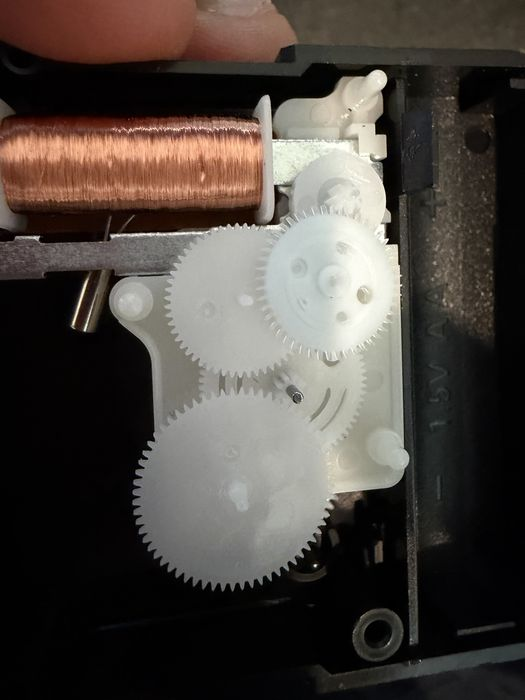
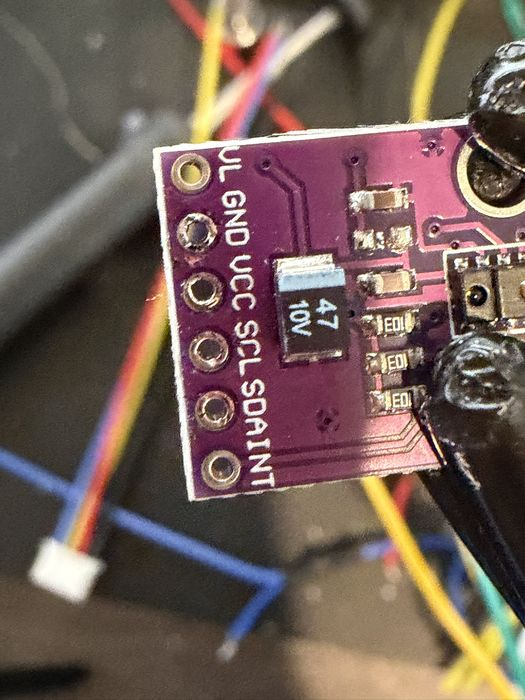

How it was made
A 12-inch clock, designed and printed at home, wired by hand, and taught a few tricks along the way.

- 12 inacross the face
- 121lights in the ring
- 12light styles
- 3000 mAhbattery inside
From idea to wall
-
Choosing a look
Six designs made it to the drawing board: minimalist, classic Roman, mid-century sunburst, hexagon, steampunk gear, and floating numbers. The floating numbers won: twelve round badges sitting on an open ring, so the wall shows through.
-
Printing the face
The face is 3D-printed in two wood-coloured materials, teak and walnut. A centre cross with four spokes holds everything together, the ring comes in four arcs pinned together, and every number is raised on its own badge.

The back of the face, with the electronics pod open. 
Wires for the screen, light and sensor run down the bottom spoke. -
A pod for the electronics
Everything clever lives in a round pod behind the centre: the main board, the battery, and the plugs for the screen, the lights and the sensor. The pod was made deeper twice before all the wiring fitted comfortably.

The power meter that keeps an eye on the battery. 
The room temperature and humidity sensor. -
The light ring
A strip of tiny colour lights, cut to 121, runs around a thin wall behind the ring. They shine outwards onto the wall, which is what makes the glow. Their brightness is capped so they stay cool and safe.
-
Wiring the brain
A thumb-sized computer with WiFi sits on a hand-soldered board, with plug-in sockets so every part can be swapped. Bring-up had its moments: a computer with a dead pin, a screen missing one power wire, and a light strip whose data wire had snapped inside its plug.

Battery wires on the underside of the computer. 
Every part gets its own wire. -
Teaching it to tell time
The hands are a quartz sweep movement driven directly, sixteen tiny steps a second. The clock remembers exactly where its hands are, even through a restart, and walks them forward or waits whenever they need to catch up with the real time.

Inside the movement: the coil the clock pulses directly. 
The gears that turn sixteen pulses into one second. -
Teaching it to see a wave
A small infrared sensor behind the window measures how close something is. The trickiest part: the clock's own second hand passes right over that window every minute and kept "waving" at it. Now the clock learns where its hands pass and only answers to people.

The gesture sensor. It only came to life after a tiny power jumper on its back was bridged. -
Looking after itself
New software is built online and published here. The clock fetches it at night, checks it, and keeps it only if it runs well; otherwise it puts the old version back on its own. Every few hours it also sends a quiet "I'm OK" message.